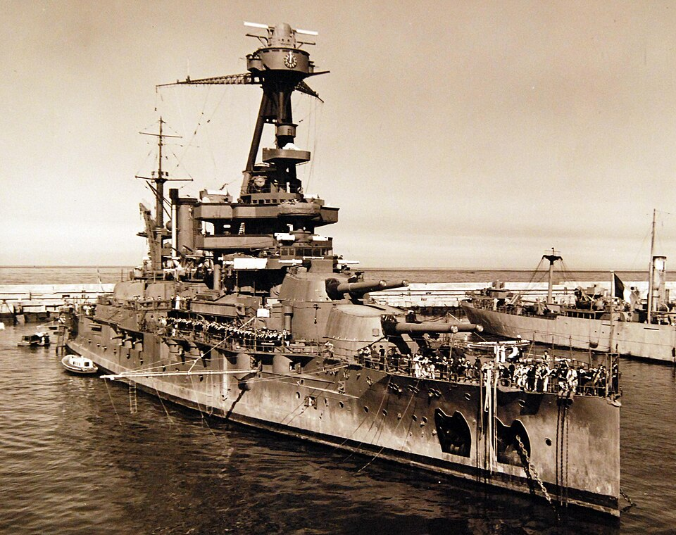

Lorraine
Acorazado de Francia, perteneciente a la clase Bretagne. Fue modernizado con la retirada de una torreta central para instalar medios de aviación.

Diseño y función
Lorraine pertenecía a la clase Bretagne. Combate de superficie y apoyo artillero costero. Sus prestaciones se detallan en la tabla técnica, con las fechas o condiciones disponibles en la referencia.
Operaciones y trayectoria
Fue modernizado con la retirada de una torreta central para instalar medios de aviación. Tras quedar desarmado en Alejandría en 1940, se reincorporó a la guerra del lado aliado y apoyó los desembarcos en el sur de Francia.
Destino final y conservación
Utilizado como buque de instrucción y alojamiento tras la guerra, y vendido para desguace en 1953.